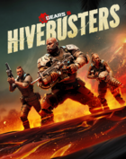
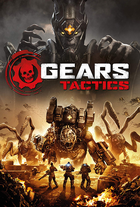
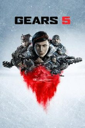
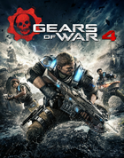

Experienced Technical Artist with a demonstrated history of working in the AAA video game industry. Skilled in Unreal Engine 4, Unity, Houdini, C#, C++, Python, and HLSL/GLSL. Strong arts and design professional, focused on engine tooling, rendering techniques, material and shader work, and procedural content.
🎮 Games

Gears 5: Hivebusters
2020 - Senior Technical Artist
Microsoft Studios - The Coalition

Gears Tactics
2020 - Senior Technical Artist
Microsoft Studios - The Coalition

Gears 5
2019 - Senior Technical Artist
Microsoft Studios - The Coalition

Gears of War 4
2016 - Technical Artist
Microsoft Studios - The Coalition
Gears of War Ultimate Edition
2015 - Technical Artist
Microsoft Studios - The Coalition
👩🏻💻 Work Experience
Technical Art Supervisor
Electronic Arts - Bioware
Vancouver, April 2022 - Present
Technical Art Supervisor at Bioware. Focused on engine, shaders, materials, studio transition to Unreal Engine 5, pipelines. Individual contributer on game projects and a focus on studio learning.
Lead Technical Artist
Microsoft Studios - The Coalition
Vancouver, March 2021 - April 2022
Lead Technical Artist at The Coalition. Engine, rendering, content, tools, prototyping, project management, UI, Fluid Ninja integration, Unreal Engine 5 integration. Manager and primary content creator of a small team of technical artists working with all disciplines to deliver creative and artistic vision.
Senior Technical Artist
Microsoft Studios - The Coalition
Vancouver, September 2017 - March 2021
Senior Technical Artist role for Gears of War. Engine, rendering, content, tools, ui, and visual effects work.
Technical Artist
Microsoft Studios - The Coalition
Vancouver, January 2014 - September 2017
Technical Artist on Gears of War Ultimate Edition, and Gears of War 4
Technical Artist
Microsoft Studios - Dreamray
Victoria, August 2012 - December 2013
Technical Artist on Microsoft Holo-Lens
📚 Education
Bachelor of Fine Art in Visual Effects
2008-2012
Savannah College of Art and Design
🤹♀️ Expertise
Unreal Engine, Unity, Frostbite, Houdini, Substance Designer, HLSL/GLSL, C++, C#, Photography, World Building, Game Design, Python, Material Networks, Shaders, Pipeline Tools